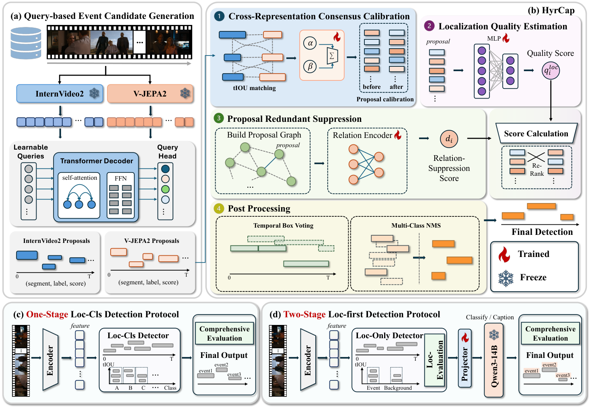
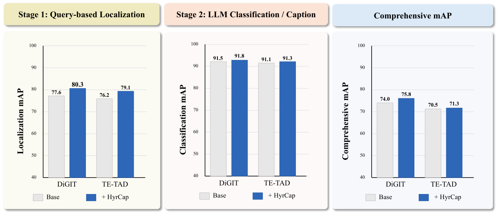
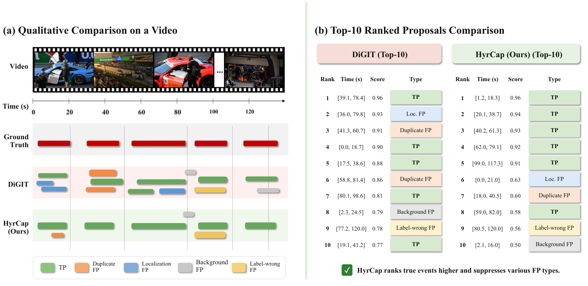

Video Event Segmentation
Abstract
Temporal action detection in long, untrimmed videos is challenged by ambiguous boundaries, inaccurate localization, and redundant proposals. Reliable action proposals are also an important interface between event localization and semantic understanding. HyrCap is a proposal-centric, query-based framework that treats dense predictions as an over-complete set of temporal event hypotheses and calibrates their ranking to better reflect localization reliability and competition between candidates.
By combining InternVideo2 and V-JEPA2 representations, HyrCap uses cross-representation consensus, localization quality estimation, and proposal redundancy suppression to improve candidate ranking. Temporal voting refines the boundaries, followed by multi-class non-maximum suppression. We evaluate standard action detection on THUMOS14, ActivityNet v1.3, and HACS-Segment, and introduce a staged protocol that evaluates category-agnostic localization, segment-level semantics, and their joint event-understanding performance separately.
Method Overview

Main Results
Class-specific temporal action detection. Selected comparisons reported in Tables 1–2 of the paper.
| Method | Features | THUMOS14 | ActivityNet v1.3 | HACS-Segment |
|---|---|---|---|---|
| AdaTAD (full fine-tuning) | VideoMAEv2-g | 76.9 | 41.9 | — |
| ActionFormer | InternVideo2 | 71.9 | 41.2 | 43.3 |
| ActionMamba | InternVideo2 | 72.7 | 42.0 | 44.6 |
| TadTR | InternVideo2 | 67.3 | 38.2 | 37.8 |
| TE-TAD | InternVideo2 | 70.3 | 41.1 | 44.1 |
| DiGIT | InternVideo2 | 73.8 | 42.0 | 45.5 |
| HyrCap | InternVideo2 + V-JEPA2 | 75.6 | 43.3 | 47.1 |
Average mAP uses tIoU 0.3–0.7 (step 0.1) for THUMOS14 and 0.5–0.95 (step 0.05) for ActivityNet v1.3 and HACS-Segment. These are class-specific detection results, not category-agnostic localization AP.
AdaTAD uses full fine-tuning; the other listed THUMOS14 and ActivityNet v1.3 results use frozen encoders. A dash indicates a result not reported in these tables.
HyrCap results at individual tIoU thresholds
| Method | 0.3 | 0.4 | 0.5 | 0.6 | 0.7 | Avg. |
|---|---|---|---|---|---|---|
| HyrCap | 88.1 | 86.7 | 79.1 | 69.5 | 54.6 | 75.6 |
| Dataset | 0.5 | 0.75 | 0.95 | Avg. |
|---|---|---|---|---|
| ActivityNet v1.3 | 64.4 | 44.0 | 11.4 | 43.3 |
| HACS-Segment | 62.7 | 48.8 | 17.9 | 47.1 |
Controlled comparison of fusion and calibration strategies
Identical InternVideo2 and V-JEPA2 proposal inputs, proposal budget, score normalization, Top-K, NMS threshold, and evaluation protocol. THUMOS14 results from Table 4.
| Method | AP@0.3 | AP@0.5 | AP@0.7 | Avg. mAP |
|---|---|---|---|---|
| Direct Union + NMS | 80.9 | 72.2 | 48.2 | 68.2 |
| Score Average | 81.8 | 72.6 | 48.4 | 68.6 |
| Max-Score Fusion | 80.5 | 71.1 | 45.7 | 66.8 |
| Temporal WBF | 83.8 | 75.2 | 50.8 | 71.1 |
| Fixed Consensus | 87.3 | 78.0 | 53.8 | 74.1 |
| HyrCap | 88.1 | 79.1 | 54.6 | 75.6 |
Staged Semantic Evaluation
Temporal localization, segment-level classification, and joint event understanding are evaluated separately on THUMOS14.

Qualitative Comparison

Video Demonstrations
Selected video segments and event descriptions from THUMOS14.
Basketball
Number 24 jumps for a dunk
A player in a yellow number 24 jersey jumps and dunks the ball while a player in a white number 6 jersey reaches up to contest. The basket and spectators are visible behind them.
Player completes a two-handed dunk
A player in white leaps high and dunks the ball with both hands, then lands and stands holding the ball. The indoor arena is full, with other players and advertising boards along the court.
Player scores over a defender
A player in red jumps beneath the basket and shoots while a defender in white reaches up to block. The ball travels through the air and enters the net.
Cricket
Batter swings at the ball
A batter in a blue uniform stands at the crease and swings at a delivery. The bowler, wearing pink, completes the bowling motion while the umpire watches from behind the batter.
Batter swings beside the wicket
A batter in blue crouches beside the wicket, holds the bat with both hands, and swings to the right. Another player wearing number 4 stands behind with a bat; spectators and advertising boards are visible in the background.
Weightlifting
Female athlete completes an overhead lift
In a warehouse-like training area, a woman grips a barbell on the floor, lifts it to her chest, drives it overhead, and stands upright while stabilizing the weight.
Male athlete performs a clean and overhead lift
A man grips a barbell in a gym, raises it from the floor to his shoulders, presses it overhead, and finally lowers it.
Female athlete performs an overhead lift
A woman pulls a barbell from the floor to her shoulders, presses it overhead, and lowers it. Wooden boxes and a seated observer are visible behind her.
Hammer throw
Athlete rotates inside the throwing area
An athlete accelerates through several rotations in a circular area with both arms extended, then continues turning while adjusting posture. A protective cage and spectators surround the field.
Athlete rotates and throws
An athlete stands in the center of a circular area, rotates while holding an implement, and then releases it forward. A protective cage, track, and spectators are visible around the venue.
Athlete throws from inside the circle
A woman in a white top and dark shorts stands inside the throwing circle, rotates, swings her arms, adjusts her stance, and releases the implement. The stadium and protective cage are visible around her.